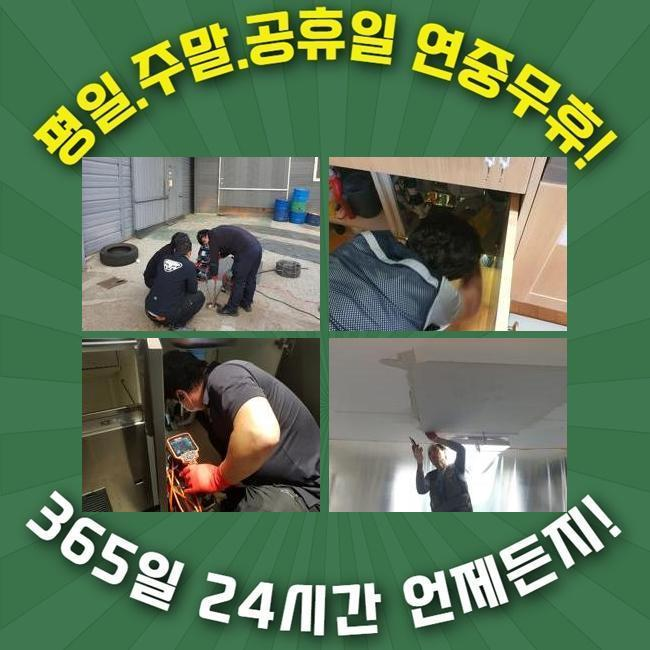
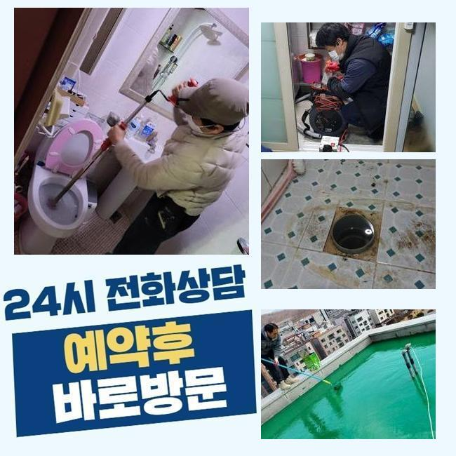
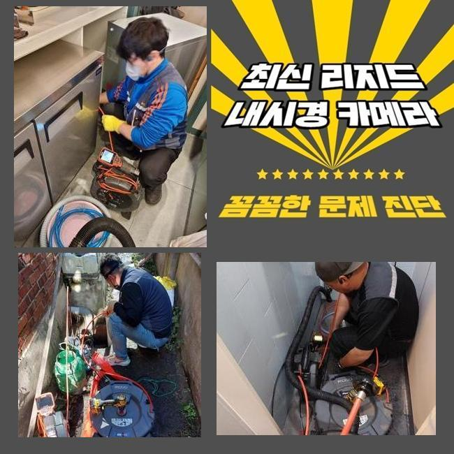
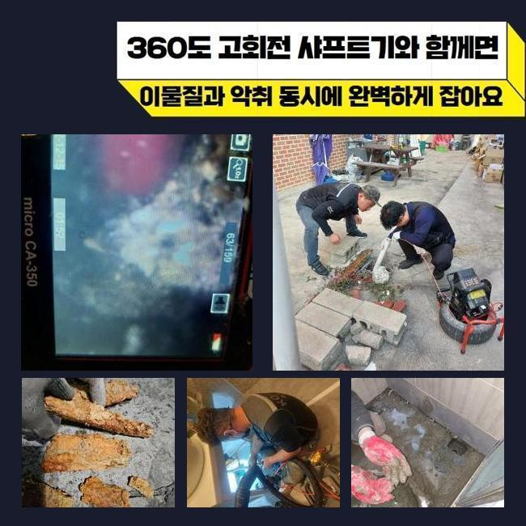
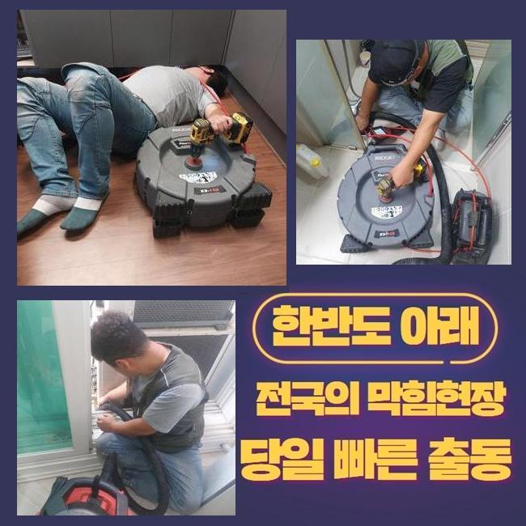
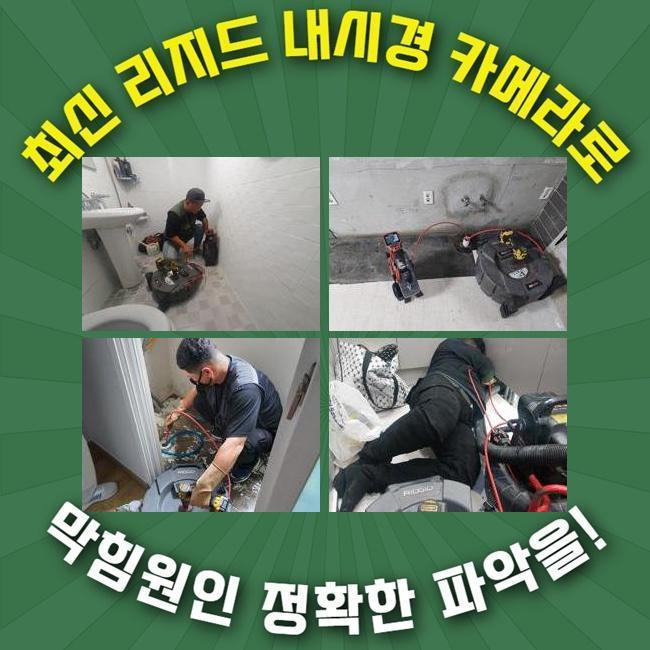

🏠 서대문 냉천동대변기역류 창천동 하수구청소장비 배관공사
용인 변기막힘 전문 시공 후기

📋 작업 개요
- 위치: 용인
- 서비스 유형: 변기막힘, 하수구막힘, 배관막힘, 누수수리, 역류해결, 뚫는업체, 배관청소, 고압세척, 설비공사, 악취차단
- 작업 일시: 2024. 12. 18. 20:27
- 업체명: 하수구수사대 (010-5615-2118)
🔍 문제 상황
서대문 냉천동대변기역류 창천동 하수구청소장비 배관공사
관로가 정체되는 문제는 한번쯤은 경험하셨으리라 봅니다
갑작스레 주방쪽이나 화장실의 변기에서 표출되는 하수관 막힘문제는 우리의 일과에 막대한 불편함을 야기하게 되는데요
그럼 주방시설에선 어떠한 연유로 정체가 발발하는건지 생각해봐야 하겠습니다
부엌시설물은 설거지에서 발생하는 음식 쓰레기나 미세한 수세미 파편들이 하수관에 적층되어서 물막힘이 생긴답니다
그 후로는 배수기능이 사라질뿐만 아니라 구린내가 올라오며 점차적으로 배수관이 낡아져서 누설현상까지 나타날수 있겠죠
보통 해당 사태가 포착되었을 경우에 화학제품을 부어서 직접적으로 해결하려 하시는데요
다만 해당 대책은 잠시간의 물길만 만들뿐 원적적인 요소를 없애지 않는다면 막힘이 재발하게 되겠죠
이물질이 파이프의 끝부분에 상존한다면 일반인이 쉽게 목도하거나 소멸시키기 힘듭니다
또 서툴게 수리를 한다면 반대로 배관을 훼손하거나 침전물들을 온당하게 소멸시키지 못할수가 있죠
그렇기 때문에 하수관이 막히게 되면 배관전문업체에게 의뢰해서 빠르고 정밀하게 처리하는게 합당합니다

🔎 원인 분석
💡 전문가 진단: 정밀 진단 장비를 사용하여 슬러지의 고착 여부를 판명하고 타격/세척 작업을 실시했습니다.
일주일전에 저희팀은 관로 막힘으로 시공문의를 받았어요
고객께선 화장실의 물막힘으로 역류상황이 생기고 냄새까지 올라오는 바람에 평상시 생활에 고충을 감당하는 상황이었죠
오취가 심각하여 일상을 영위하기가 어려웠고 역류현상까지 생겨 화장실이 더욱 지저분해지는 형편에 다다랐다고 이야기하셨죠
손님분의 시급한 사태를 고려해서 곧장 고객님댁으로 이동했죠
내방한뒤에 의뢰인과 이야기를 나누고 정황을 상세하게 파악하였어요
의뢰자께서는 욕실에서 생활하수가 빠지지 못하는 것은 물론 역류증세까지 간헐적으로 나타나 공간이 오염되어버린 상황이라 말하셨어요
한달전부터 미세한 막힘현상이 벌어지게 되었는데 내버려뒀다가 더욱더 악화한 상황이었죠
이럴때는 단순하게 뚫음을 실행하는것으론 상황을 극복하기 어려워요
이물들이 파이프에 강력히 고착화되어 있는거라서 안쪽의 현황을 세밀하게 검사한다음에 합리적인 계획을 세워 공사해야 하죠
내부에서 생겨난 트러블은 육안으로 검사하기 곤란한데요
그러므로 저희들은 배관카메라를 이용하여 파이프안쪽의 모습을 세밀하게 관측하는 과정을 진행하였죠
배관카메라로 확인하니 관로안에는 장기간 누적된 음식쓰레기와 기름때들이 엉겨서 통로를 완전하게 차단하고 있었어요

🔧 작업 과정
또한 침전물들이 딱딱하게 고정되어서 간단히 세정만해서는 정비가 힘들었죠
진단을 끝낸다음에 분쇄기기를 이용해서 배수관에 단단하게 들러붙은 이물들을 분리시키는 업무를 시작하였죠
이 분쇄기기는 관로내부에 적체된 슬러지 등을 재빠르게 와해시키고 소멸시킬수 있기 때문에 다양한 혼합슬러지들이 움직이지 않는 상황에서 상당히 쓸모가있죠
분쇄기기는 강한 회전기능을 토대로 찌꺼기들을 부숴서 배관면에 체류중인 억센 기름찌꺼기나 각종 노폐물들을 적절하게 소멸시킬수 있어요
하지만 잘못된 방향으로 파쇄해 나간다면 하수관이 망가질수도 있기에 전문적 테크닉과 주의깊은 시공이 요망되죠
이번에 방문한 곳은 게다가 이물들이 배관에 강력하게 체류하고있어 한 두차례의 가동만으로는 정비를 완수하기 힘겨웠죠
주위를 둘러싼 석회물질들은 더더욱 이런 정황을 힘들게 했죠
그러한 이유로 저희팀에선 고압세척장비와 샤프트기기를 병행 사용하면서 노폐물을 더욱 잘게 부수고 안전히 제거하는 작업을 단행하였어요
강력한 압력으로 찌꺼기를 소제할땐 성분이 주위로 퍼지지 못하게끔 꼼꼼하게 관리해야 하는데요
슬러지가 주위로 퍼져나가 주변부가 심각한 모습으로 변질된다면 처치가 어려워지기도 하므로 각별한 주의가 요망되죠
그래서 세척중 이러한 상황을 차단하려 보양절차를 선행했고 고객님이 우려하지 않으시도록 빈틈없이 세정을 진행했죠
이물을 전부 처리한뒤 다시금 배관내시경을 투입하여 관을 진단해보았습니다
여전히 제거가 안된 기름슬러지나 누수문제 등을 조사하는건 상당히 중요하다 말씀드릴수 있죠
금번의 업무에서는 수차례 하수관 곳곳을 진단하며 연계하여 일어날 가망이 큰 문제들을 사전에 차단했습니다
전체 찌꺼기들이 정리된걸 파악한뒤에 폐수를 내려보내면서 배수성능이 돌아왔는지 테스트해 보았죠
정상으로 사라지는 정황을 수차례 시험으로 확인하였어요
배수공으로 폐수가 원활하게 소멸되는걸 의뢰인분도 확인하셨고 분명하게 수리되었다는걸 확인했어요
공사가 지연되어 찌꺼기가 더더욱 늘어나게 된다면 주위세대분에게 문제가 전가될수도 있어요
그럴땐 정리해야할 것이 많아질 가능성이 커지기에 선제적 검사를 받으시길 바라요


✅ 작업 완료
거기에 더해 하수구막힘은 평상시의 생활에 트러블을 일으키기에 되도록 빨리 처치하시는게 나을거에요
배관막힘이 심해진다면 위생적인 문제를 줄뿐만 아니라 배관손상으로 야기된 누수증상까지 생겨날수 있단 사실도 생각해야 돼요
공정을 시작하기 전에는 필수로 합당한 수리기기를 갖춰야 해요
안 그러면 진단을 올바르게 못할수가 있으며 고장이 또 생길수가 있답니다
해당 사태들로 진단이 필요하다면 아무때라도 저희측에 전화해 주세요



⚠️ 베란다 누수 및 방수 관리 방법
- ✅ 비가 많이 올 때 창틀 주변이나 아래층 천장에 얼룩이 생기는지 정기적으로 확인해 보세요.
- ✅ 우수관 주변 실리콘 마감이 들뜨거나 깨진 틈새가 있는지 손상 여부를 수시로 체크하세요.
- ✅ 베란다 바닥 타일의 줄눈(메지)이 소실되면 그 틈으로 물이 침투하여 누수가 유발됩니다.
- ✅ 누수 의심 증상 발견 시 방치하면 아래층 손실이 커지므로 즉시 전문가의 진단을 받으십시오.
💡 핵심 정리
- 확실한 장비 작업(내시경 점검 및 샤프트 스케일링)으로 원인을 뿌리 뽑습니다.
- 작업 후 1년 이내에 동일한 부위 재발 시 100% 무상 A/S 서비스를 보장합니다.
- 서울 · 경기 · 인천 전 지역에 24시간 언제든 긴급 출동할 수 있도록 항시 대기 중입니다.
❓ 자주 묻는 질문 (FAQ)
🚨 용인 변기막힘 문제로 고민이신가요?
정확한 원인 진단과 확실한 시공으로 재발 없는 해결을 약속드립니다.
24시간 긴급 출동 | 서울 · 경기 · 인천 전지역 | 1년 내 재발 시 무상 A/S